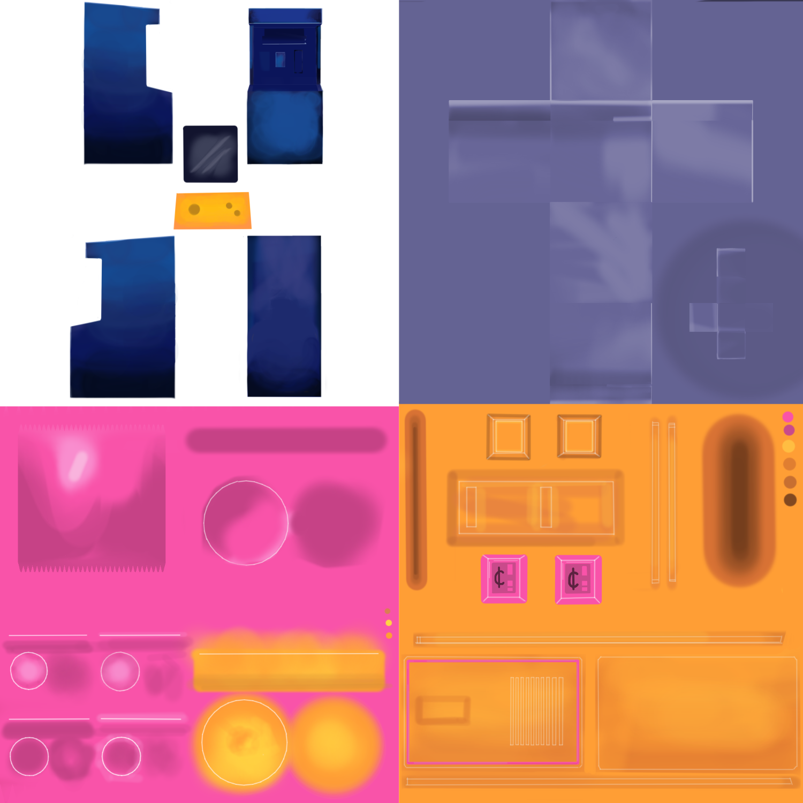
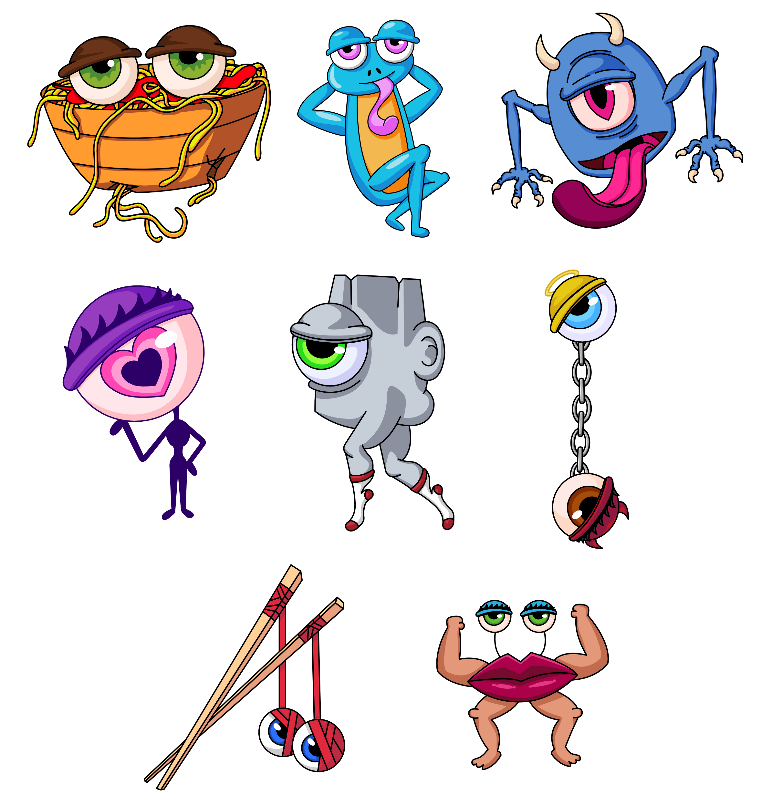
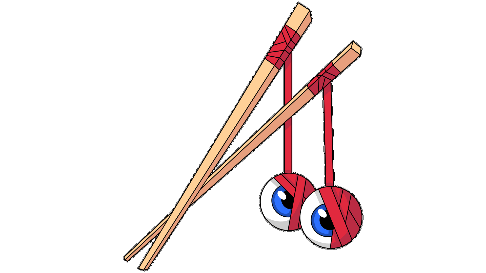
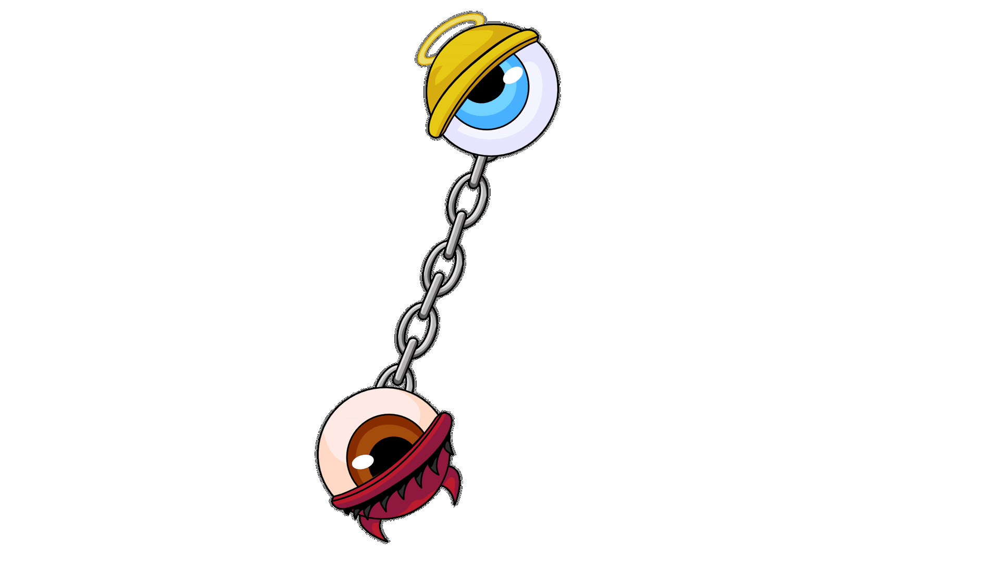
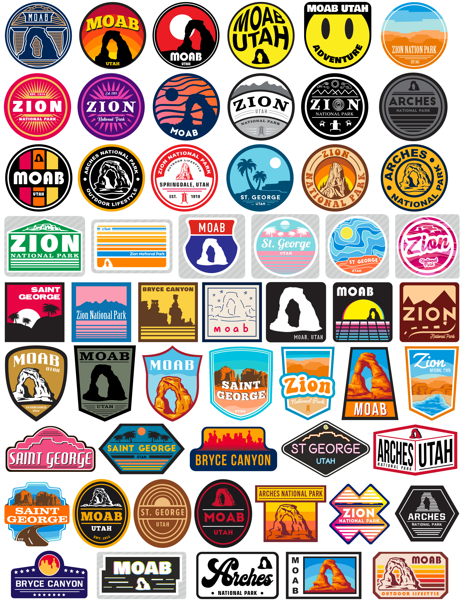

Creative Work.
A closer look at the artwork, experiments, and decisions behind each project.
A closer look at the artwork, experiments, and decisions behind each project.

The goal of this project was to practice creating stylized textures with a hand-painted look, transforming simple gray models into colorful objects full of personality. I used my background in illustration and digital painting to create the textures, then applied UV mapping to make sure they fit correctly onto each 3D model.
I wanted every object to feel like it belonged in the same environment while still having its own unique style. I imagined this scene as part of an indie game, where the player explores an arcade in search of a missing item needed to progress through the story.



I was asked to create a collection of icons for crane game software, featuring quirky fantasy creatures designed in my own art style. At the time, I was transitioning from Adobe Illustrator to Affinity Designer, making this the perfect opportunity to explore the new software while building on my illustration skills.
This project also gave me the chance to practice animation in DaVinci Resolve. By adding movement to the characters' features, I was able to give each creature more personality and bring the illustrations to life. That's one of my favorite parts of creating art, turning a simple character into something that feels alive.



At a previous job, I worked for a company that created apparel for national parks across the United States. During my time there, I designed around 100 patches using the company's existing templates while adding my own creative touches to each design.
This project gave me the opportunity to experiment with different layouts, create original illustrations, pair fonts, and develop color palettes while maintaining a consistent style across the collection. As much as I enjoyed designing the patches, the most rewarding part has been seeing my work on actual products in stores across the country. I've even collected a few hats featuring my designs, and I look forward to discovering more of them in the future.